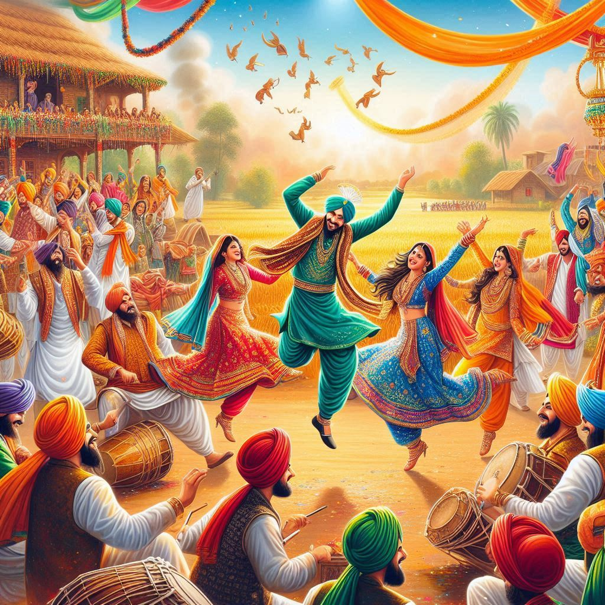
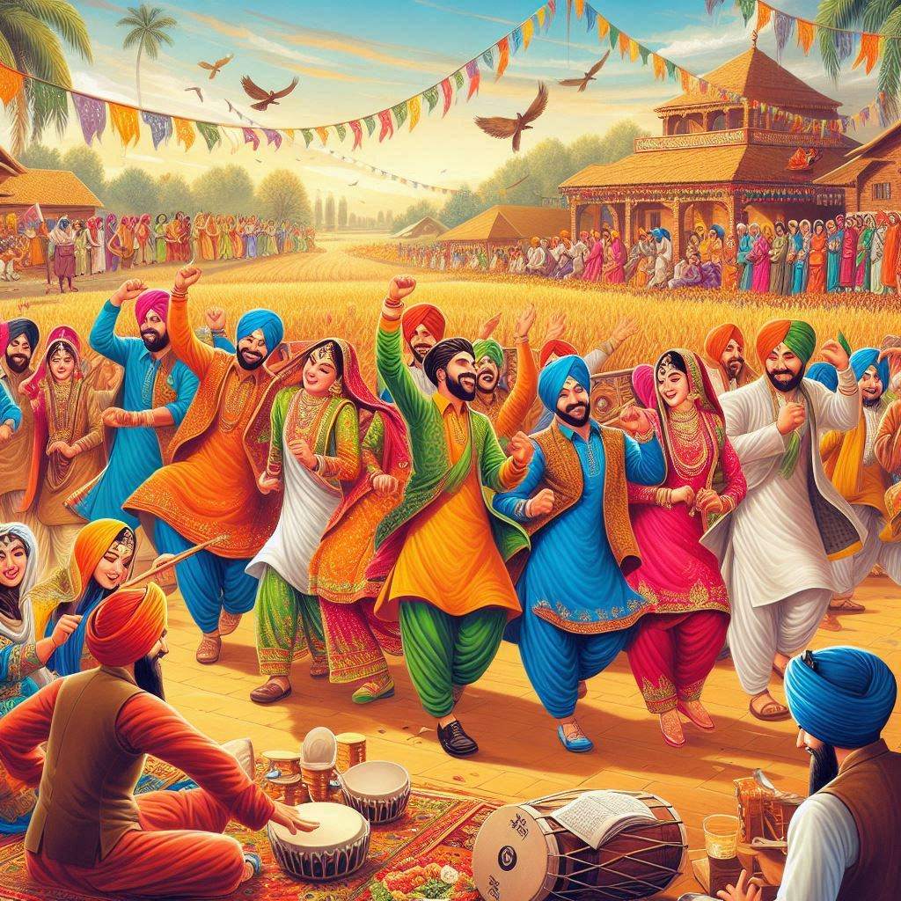

Traditions of Indian Punjab are deeply rooted in its history, culture, and religious practices. The region's vibrant customs reflect a unique blend of
Sikh,
Hindu, and
Muslim influences, with a focus on
community,
family values, and a rich cultural heritage. Here are some key traditional aspects of
Punjab:
1. Family and Social Structure
- Patriarchal Society: Traditionally, Punjabi society has been patriarchal, with the elders (especially the father) often holding the primary decision-making authority within the family.
- Joint Families: Although nuclear families are becoming more common, many Punjabi families continue to live in joint families, where extended families—parents, children, grandparents, uncles, aunts, and cousins—live together under one roof. This structure fosters a strong sense of community and support.
- Respect for Elders: Respect for elders is an important tradition. Elders are revered for their wisdom and experience, and their opinions often guide family decisions. Younger people greet elders with a respectful gesture called "charan sparsh" (touching their feet).
2. Festivals and Celebrations
Punjab is known for its
festivals, which are marked by joy, dancing, music, and religious ceremonies. Some significant festivals include:
- Baisakhi: Celebrated in April, Baisakhi is one of the most important harvest festivals of Punjab. It also marks the formation of the Khalsa by Guru Gobind Singh in 1699. The festival is marked by vibrant Bhangra and Gidda dances, processions, and prayers at Gurudwaras (Sikh temples).
- Lohri: Lohri is celebrated in January to mark the end of winter and the start of the harvest season. People gather around bonfires, sing traditional songs, and offer sweets made from sesame seeds, sugarcane, and jaggery.
- Teej: Celebrated by married women, Teej marks the onset of the monsoon season. Women dress in colorful clothes, apply henna to their hands, sing traditional songs, and perform dances. It is a celebration of marital bliss and fertility.
- Diwali: Diwali, the festival of lights, is widely celebrated by both Sikhs and Hindus in Punjab. Sikhs observe Bandi Chhor Divas on Diwali, which marks the release of Guru Hargobind Ji from imprisonment.
- Gurpurabs: These are the anniversaries of the birth or death of the Sikh Gurus. Gurpurabs like the birth of Guru Nanak (Guru Nanak Jayanti) and Guru Gobind Singh's birthday are observed with religious processions, prayers, and community meals (Langar).
3. Music, Dance, and Arts
- Bhangra and Gidda: Bhangra is a lively and energetic dance form that originates from the Majha region of Punjab. It is performed to celebrate harvests, festivals, and weddings, characterized by fast beats and rhythmic movements. Gidda is the traditional folk dance performed by women, involving rhythmic clapping and twirling to folk songs.
- Folk Music: Folk music in Punjab is a vital part of cultural traditions. Instruments like the dhol (drum), tabla, sitar, and sarangi are commonly used in performances. Traditional folk songs, including those sung during festivals, weddings, and harvest celebrations, play a significant role in Punjabi culture.
- Poetry and Storytelling: Punjab has a rich tradition of poetry and storytelling. Legendary poets like Warish Shah, who wrote Heer Ranjha, and Shah Muhammad contributed significantly to Punjabi literature. Storytelling through kisse (folk tales) is a traditional practice often passed down through generations.
4. Clothing and Attire
Traditional Punjabi clothing varies slightly between men and women but shares common elements:
- Men's Traditional Clothing:
- The Kurta (a long tunic) is a common garment worn by men, often paired with salwar (loose-fitting pants) or churidar (tighter pants). In rural areas, the lungi or dhoti (a cloth tied around the waist) is still worn.
- The Patiala suit is a popular variation of the Punjabi dress.
- For formal occasions, men wear a pagri (turban), which is an important cultural symbol for Sikhs.
- Women's Traditional Clothing:
- Women traditionally wear the Salwar Kameez, a set of long tunic (kameez) paired with loose pants (salwar) and a matching scarf (dupatta). This attire is both practical and elegant.
- During festivals or weddings, women wear heavily embroidered lehenga (skirt) and choli (blouse), often paired with a dupatta.
- Chandbali earrings, nath (nose ring), and other traditional jewelry are often worn during weddings and festivals.


5. Weddings and Marriage Traditions
Punjabi weddings are lively, colorful, and full of cultural rituals, lasting for several days.
- Pre-wedding Rituals:
- Roka: A formal announcement of the engagement.
- Sagan: A ceremony where the groom's family presents gifts to the bride.
- Mehendi: A ceremony where the bride's hands and feet are decorated with henna.
- Wedding Day Rituals:
- The Anand Karaj is the Sikh marriage ceremony, conducted in the presence of the Guru Granth Sahib (the Sikh holy book). It involves the couple taking four rounds around the Guru Granth Sahib while hymns are sung.
- Jaimala: The bride and groom exchange garlands, symbolizing mutual respect and commitment.
- Lavan Phere: The couple takes four rounds around the sacred fire, each round symbolizing a vow for their marriage.
- Post-wedding:
- The Vidaai marks the bride’s departure from her parental home, a deeply emotional moment in Punjabi weddings.
6. Cuisine and Culinary Traditions
Punjab is famous for its
rich and hearty cuisine, which reflects the region’s agricultural heritage. Some notable foods include:
- Makki di Roti and Sarson da Saag: A traditional dish made from cornmeal and mustard leaves, commonly eaten during winter.
- Butter Chicken: A dish that has gained international popularity, made with chicken cooked in a rich and creamy tomato-based sauce.
- Amritsari Kulcha: A stuffed flatbread served with spicy chickpea curry.
- Chole Bhature: A delicious dish of deep-fried bread (bhature) served with spicy chickpeas.
- Lassi: A yogurt-based drink, often served sweet or salty. The Amritsari Lassi is particularly famous.
- Tandoori Dishes: Dishes cooked in a tandoor (clay oven), including tandoori chicken, naan, and tandoori roti.
7. Hospitality and Community Traditions
- Langar: The tradition of Langar (community kitchen) is central to Sikhism and the culture of Punjab. It is the practice of serving free meals to everyone, regardless of religion, caste, or social standing, promoting equality and selfless service. Gurudwaras (Sikh temples) across Punjab serve Langar daily.
- Punjabi Hospitality: Punjabis are known for their warm hospitality. Guests are treated with great respect, and it is common for them to be offered food and drink immediately upon arrival, often with chole-bhature, lassi, or paratha.
8. Rural Traditions
- Agricultural Practices: Punjab’s culture is closely tied to its agricultural roots, and many traditional practices revolve around farming cycles. Harvesting, sowing, and festivals like Baisakhi celebrate the cycles of sowing and reaping crops.
- Fairs and Melas: Rural Punjab hosts many melas (fairs), such as the Rural Olympics in Kila Raipur, where traditional sports and games like tug-of-war, wrestling, and bullock cart races take place.
Conclusion
The traditions of Indian Punjab reflect the region’s agricultural roots, vibrant festivals, strong religious beliefs, and deep sense of community. From wedding ceremonies to the lively Bhangra dances, from Punjabi cuisine to cultural hospitality, these traditions continue to shape the lives of Punjabis, both in India and across the world. The state’s heritage is a living expression of its rich history, culture, and values.